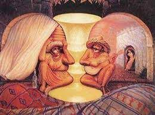
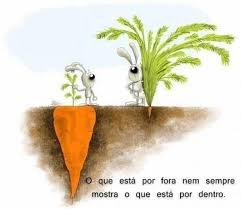

Nossos comportamentos e escolhas de vida são muito influenciados pela forma como vemos o mundo e atribuímos significados para o que vivemos. Nosso cérebro identifica padrões nas situações que experimentamos e depois de um determinado tempo é capaz, de forma automática, de disparar uma reação comportamental, sem passar por uma nova reflexão.
Penso que o pior impacto do pré-julgamento é não darmos oportunidade para algumas pessoas, pois sabe-se lá que talentos estamos desperdiçando! Para citar um exemplo, podemos lembrar da história de Isaac Newton, que por tirar notas ruins na escola era visto como sem futuro. Erro feio não é mesmo? E o viés acadêmico é um mito valorizado nas empresas hoje em dia. Ter estudado em uma boa universidade muitas vezes é o primeiro corte na escolha de candidatos. Se sua empresa também faz isto, se pergunte, que outros talentos vocês estão deixando de incluir? Diversidade é um dos componentes essenciais para a inovação. E sem inovação, difícil imaginar uma empresa com um futuro longo!